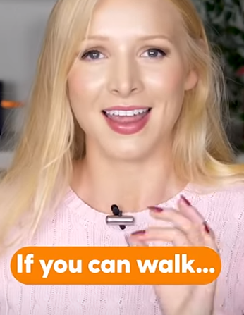

from IPython.display import display, Markdown
import reOn a train or In a train?
A common challenge for learners of English is knowing which PREPOSITION (e.g. in or on) to use in different contexts.
One example of this the situation where you are describing where you are when in different kinds of vehicles. For example:
🚆 I am on a train
🚕 I am in an taxi
- How do we know when to use
inand when to useon?
@EnglishwithLucy to the rescue!
The other day a Short from Lucy turned up on my YouTube addressing this specific issue.
And she promised:
I will teach you to know the correct answer every single time
Lucy’s answer…
Lucy promised her rule will make it so you never have to think about it again!
1. Rule for ON a vehicle

Tip
If you can walk onto the vehicle standing up on your feet, then its ON…
Examples: You get ON a plane, train, bus, tram
2. Rule for IN a vehicle
Tip
If you have to crouch down and sit in the vehicle–if you have to make yourself smaller–you get IN..
Examples: You get IN a car, taxi, helicopter
But does it really work like that?
However, if you think for a moment you can see that maybe it isn’t that straight forward.
Sometimes you might use in in one context and on in another for the same vehicle. Especially, those in the second category.
- I am on a plane right now…
- Let me call you back I’m in a plane…
What do LLMs say about this?
Given that LLMs are train on huge amounts of data, the majority of it capturing instances of people using English and they excel at generalizing to patterns and templates, it seems like a reasonable assumption that most LLMs would have little trouble using the right preposition.
That is, you are unlikely to generate the text:
Speaker 1: Hey where are you right now?
Speaker 2: Oh I'm ON a car
...Unless, I suppose Speaker 2 happens to be car surfing!
Bing CHAT (GPT 4)
PROMPT:
I am traveling using a specific vehicle. I get a call from someone and they ask “Where are you?”. I might reply “I am IN a/an X” or “I am ON a/an Y”. Can you create a list of 10 vehicles that would be used in place of X (in a/an X) and 10 for those used for Y.
Generated the following response:
RESPONSE:
Sure, I can create such a list for you. Here are some possible vehicles that you can use in place of X or Y:
- I am in a/an:
- car
- taxi
- bus
- train
- airplane
- helicopter
- submarine
- spaceship
- tank
- limousine
- I am on a/an:
- bike
- motorcycle
- boat
- ship
- skateboard
- scooter
- horse
- camel
- roller coaster
- surfboard
I hope this helps you with your question. 😊
Observations
- There are no overlapping items
- Bing Chat doesn’t seem to be following Lucy’s rules here
- ❌ I am IN a bus
- ❌ I am IN a train
- ❌ I am IN an airplane
- Skateboards and surfboards are something that seem outside of those rules too.
Does the LLM have a ‘rule’ it can explain?
I followed up by asking how the LLM was deciding between in and on:
PROMPT:
How do you decide between using IN or ON in this context?
And it gave a lengthy response making use of sources from a websearch.
RESPONSE:
There is no definitive rule for choosing between IN or ON for vehicles, but there are some general guidelines that can help you most of the time. Here are some of them:
- Use IN when you are talking about a small or personal vehicle that has a compartment that surrounds you, such as a car, a taxi, a van, a train, an airplane, a helicopter, a submarine, or a spaceship.
- Use ON when you are talking about a large or public vehicle that allows you to move around freely inside it, such as a bus, a boat, a ship, a roller coaster, or a plane.
- Use ON when you are talking about a vehicle that you ride on top of, without a compartment, such as a bike, a motorcycle, a skateboard, a scooter, a horse, a camel, or a surfboard.
These are not absolute rules, and there may be some exceptions or variations depending on the context or the type of vehicle. For example, you can say that you are IN a canoe or a kayak, even though they are small and open, because you are sitting inside them. You can also say that you are ON a yacht or a cruise ship, even though they are large and enclosed, because you can walk around on them.
If you want to learn more about this topic, you can check out some of the web search results that I found for you¹²³. I hope this helps you with your question. 😊
Source: Conversation with Bing, 2/8/2024 1. “In” and “on”: How can I decide which one to use for vehicles?. https://ell.stackexchange.com/questions/155/in-and-on-how-can-i-decide-which-one-to-use-for-vehicles. 2. What is the correct word to use for vehicles: in or on?. https://www.britannica.com/dictionary/eb/qa/What-is-the-correct-word-to-use-for-vehicles-in-or-on-. 3. When to use “in” and “on” | Britannica Dictionary. https://www.britannica.com/dictionary/eb/qa/When-to-use-prepositions-in-and-on.
Observations
- It gives “guidelines” similar to Lucy’s rules, with the addition of a third one for “a vehicle that you ride on top of, without a compartment”, like a bike.
- HOWEVER, some of the examples of vehicles are the opposite. For example, IN A PLANE vs ON A PLANE.
- It cites some sources used in generating the answer. This is because Bing Chat is GPT4 where the results from a Bing search for a summary of your query are added to your query to augment the prompt, i.e. it is a Retrieval Augmented Generation or RAG system.
Trying a smaller open source model
Using Ollama (ollama.ai)–tool that lets you use smaller large language models on a laptop–I tried exploring the same question using a range of different prompts.
I queried the
llama2-7b-chatmodel (see https://ollama.ai/library/llama2 for details)The complete transcript is in the file
llama2-7b_transcript.txt
llama2_ts = open('llama2-7b_transcript.txt').read()
responses = [resp for resp in re.split('(?=PROMPT)',llama2_ts) if resp]I began with a specific example of taking a taxi journey to see how the LLM would complete the phrase “I am currently …”
print(responses[0])PROMPT: You take a taxi journey and receive a phone call. How would you describe your location to the person you are speaking to. 'I am currently ...
RESPONSE: Great, thank you for asking! I can definitely help you with that.
So, if I'm in a taxi and receive a phone call, I would likely describe my
location by giving the nearest landmark or cross streets. For example, I
might say something like: "I'm currently at the intersection of 5th Avenue
and 23rd Street in Manhattan."
Alternatively, if I have a specific destination in mind, I might give more
detailed directions, such as: "I'm heading to the Empire State Building,
which is located on 34th Street between 5th and 6th Avenues."
Of course, the exact way I would describe my location would depend on the
context of the call and the specific location I am in. But hopefully, these
examples give you a general idea of how I might respond!
Observations
- Llama2 has been finetune to be a helpful conversation assistant. So is always very polite in responses, e.g. “Great, thank you for asking!”
- Using the word
locationin the prompt seems to push the LLM to focus outside of the location of the speaker, i.e. “IN A TAXI”, to a more general (and perhaps intuitive) sense of where the taxi currently is in terms of the journey the person is taking. - However, it does use the expected preposition in the response: > So, if I’m in a taxi and receive a phone call …
Repeating the prompt but for a TRAIN instead of a TAXI:
print(responses[1])PROMPT: You take a train journey and receive a phone call. How would you describe your location to the person you are speaking to. 'I am currently ...
RESPONSE: Great, thank you for asking! If I'm on a train journey and receive a phone
call, I would likely describe my location by giving the name of the city or
town we are passing through, along with the approximate distance from the
destination. For example, I might say something like: "I am currently
traveling through Philadelphia, which is about 20 miles west of New York
City."
Alternatively, if I have a specific location in mind, such as a nearby
landmark or attraction, I might give more detailed directions, such as: "I'm
passing by Independence Hall in Philadelphia, which is located downtown and
about 2 miles from the train station."
Of course, the exact way I would describe my location would depend on the
context of the call and the specific route and stops on the train journey.
But hopefully, these examples give you a general idea of how I might
respond![INST0]
Observations
- Same points as above regarding the interpretation of
locationas reference to the currently stage of the journey. - And again in setting up the response, the LLM responds with the expected preposition (ON) > If I’m on a train journey and receive a phone call,
Trying a template prompt
Next, I tried to direct the LLM more specifically using a fill in the word template.
I am X a taxi
print(responses[2])PROMPT: What word would you use in place of X in the clause "I am X a taxi"
RESPONSE: Great, thank you for asking! If we are trying to fill in the blank with a
word that would be appropriate in the sentence "I am X a taxi," some
possible options could include:
* Driver (as in, "I am John a taxi driver")
* Passenger (as in, "I am Sarah a taxi passenger")
* Rider (as in, "I am Tom a taxi rider")
* Customer (as in, "I am Jane a taxi customer")
* User (as in, "I am David a taxi user")
Of course, the exact word we would use would depend on the context and the
relationship of the speaker to the taxi service. But hopefully, these
options give you some ideas for how we might fill in the blank
Observations
- My assumption that the most likely word to fill the
Xslot would be a preposition, i.e. eitherinoronwasn’t quite right in this case. - It provides a range of options for people who would be associated with a taxi, e.g. driver, passenger, rider, customer etc.
Trying to be more specific
So I went back and asked for just one word to fill the X slot and an example X=on
print(responses[3])PROMPT: Just one word. So "I am X a plane" X=on
RESPONSE: Ah, I see! If we are trying to fill in the blank with just one word, here
are some options that could work in the sentence "I am X a plane":
* On (as in, "I am John on a plane")
* In (as in, "I am Sarah in a plane")
* At (as in, "I am Tom at an airport")
* Onboard (as in, "I am Jane onboard a plane")
Of course, the exact word we would use would depend on the context and the
relationship of the speaker to the flight. But hopefully, these options give
you some ideas for how we might fill in the blank!